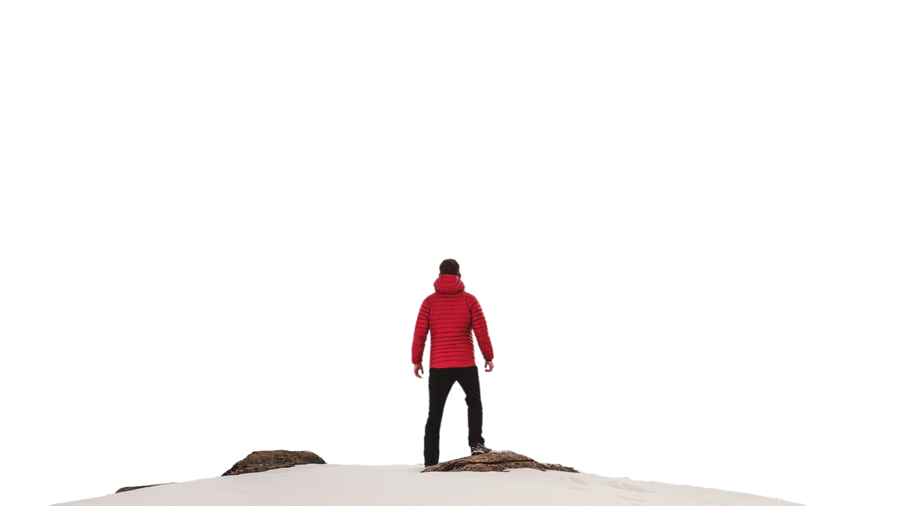

ADVENTURE
Adventure Time
Adventure time is all about exploring the unknown, embracing challenges, and creating unforgettable memories. Whether trekking through mountains, diving into the ocean, or soaring in the sky, adventure fuels the spirit of excitement and discovery.
Stepping outside comfort zones leads to thrilling experiences and personal growth. Activities like rock climbing, kayaking, and backpacking test endurance and resilience. Adventurers seek new landscapes, cultures, and adrenaline-pumping moments. The essence of adventure lies in pushing limits, embracing uncertainty, and finding joy in the journey. Every adventure tells a story worth remembering.
BIKING
Biking is a versatile sport enjoyed on roads, trails, and mountains. It enhances fitness, improves endurance, and offers an eco-friendly way to explore cities and nature. Cyclists choose bikes based on terrain and purpose.
From casual rides to extreme downhill courses, biking has something for everyone. Road cycling focuses on speed and endurance, while mountain biking tackles rough terrain. Advanced bikes feature lightweight frames, durable suspensions, and precision gears. Many cities promote biking with dedicated lanes and rental programs. Whether for recreation or sport, biking fosters health, adventure, and sustainability.
PARA GLIDING
Paragliding lets adventurers soar through the sky using a lightweight, fabric wing. Pilots control flight by shifting weight and pulling brakes. It offers breathtaking views and an unmatched sense of freedom.
This aerial sport requires training to master takeoff, flight, and landing techniques. Paragliders use thermals—rising warm air—to extend flights, sometimes traveling miles. Weather conditions play a crucial role in safety and performance. Many enthusiasts seek mountain launch points, enjoying the serenity and excitement of gliding above landscapes. Whether for leisure or competition, paragliding offers a unique, unforgettable adventure.
SURFING
Surfing is an exhilarating water sport where riders balance on waves using a board. It requires skill, balance, and awareness of ocean currents. Enthusiasts chase the perfect wave, enjoying the thrill and freedom of the sea.
With roots in ancient Polynesian culture, surfing has evolved into a global phenomenon. Surfers study wave patterns, tides, and wind conditions to optimize their experience. Modern boards vary in shape and material, catering to different styles. Competitive surfing tests agility, speed, and creativity on the waves. Many surfers describe the experience as a deep connection with nature.